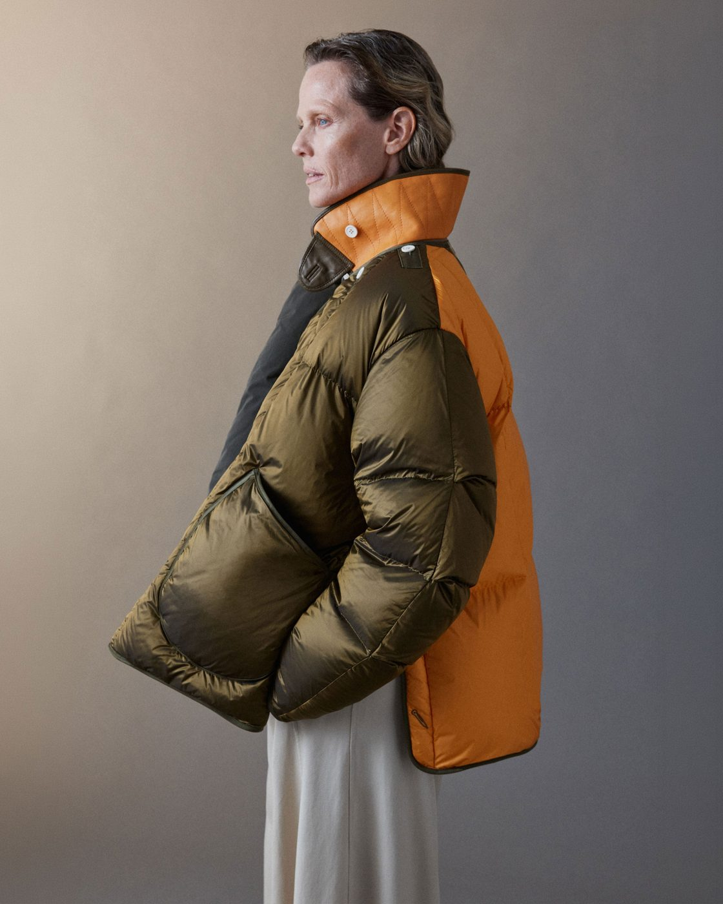
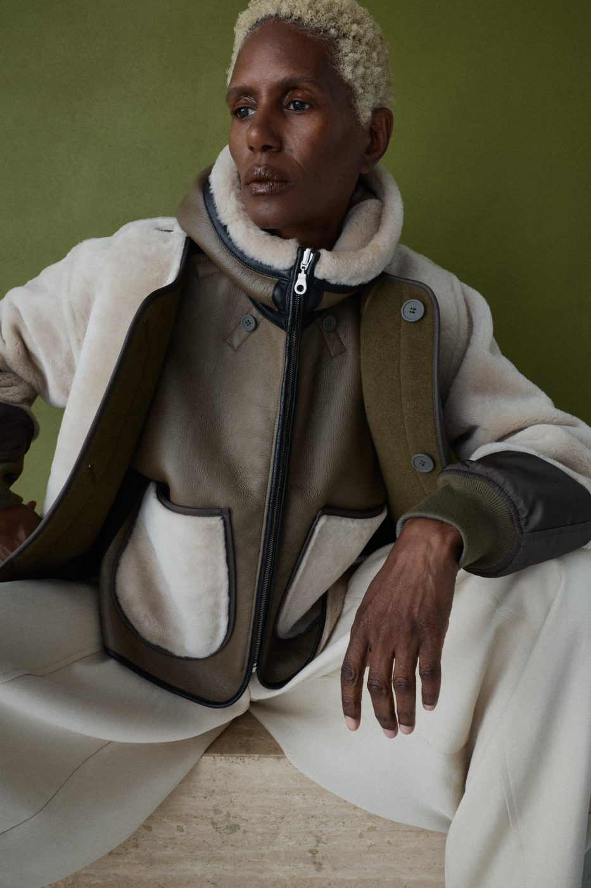
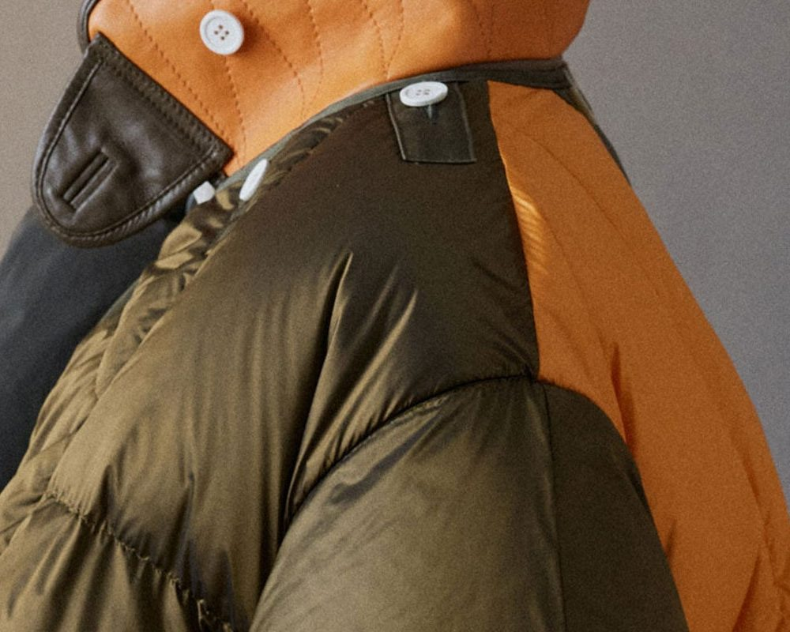
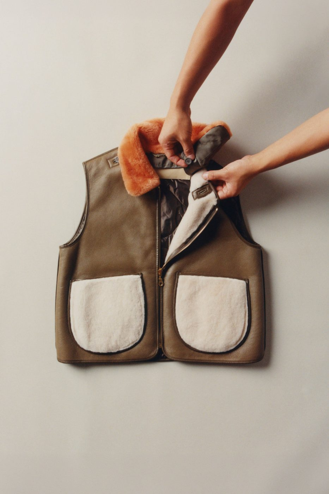
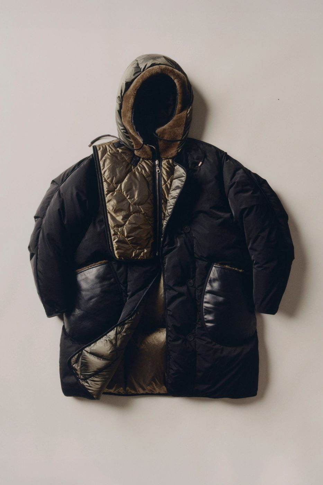
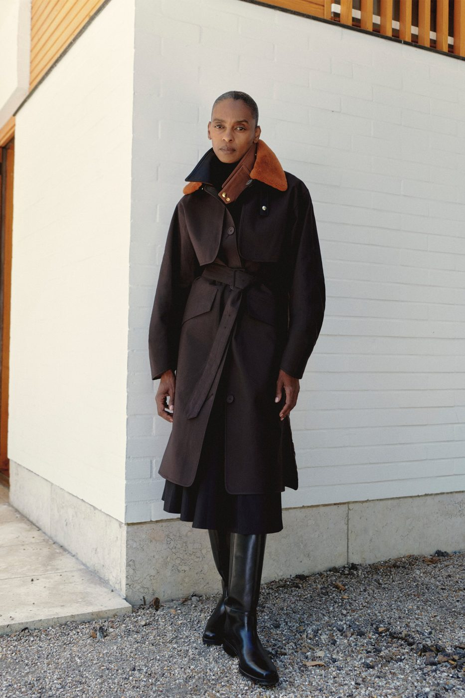

Company study · 2026-11-16
Marfa Stance
Visual study (mood board) of Marfa Stance, a modular outerwear brand: design and style from its website and lookbook images.
Mood
Quiet, even studio light on soft stone-gray walls; olive, black and one burnt-orange accent. Garments are large, rounded, reversible volumes shown plainly on calm people. The feeling is considered and seasonless, closer to a furniture or art catalogue than to a sportswear campaign.
 (01)
(01)

(02)

(03)

(04)

(05)

(06)

(07)Palette, measured from the images
#CFCCC4#171718#5F5C5C#5B5231#403228#924C18Visual themes
01 Reversible volume. Key motifs: oversized quilted shapes, deep patch pockets, drawcords at hem, cuff, neck and waist. Sub motifs: olive outside with an orange lining; one color-blocked side, one monochrome side.
02 Modular kit of parts. Key motifs: collars, hoods and liners that attach to a base garment. Sub motifs: buttons and snaps as visible hardware; vest and liner layers shown in hand.
03 Calm portraits. Key motifs: still, side-on or frontal poses against plain walls; people of different ages. Sub motifs: warm gray, green and cream walls; hard shadow of a corner or window.
04 Italian craft. Key motifs: family-run factory near Venice, deadstock and recycled fabrics. Sub motifs: store front on a street with a black fascia and white name.
Hero material
Parachute styles use Italian and Japanese nylons, 'inspired by parachute silks', quilted in the brand's 'onion quilting', reversible from a quilted side to a smooth rain-resistant side; each parachute takes about 15 hours in a family-owned factory near Venice (https://www.marfastance.com/pages/parachutes, retrieved 2026-11-16).
The look rests on a glossy, lightweight nylon that puffs into soft rounded cells; the sheen on the olive side against matte orange lining is the signature contrast. Close-up at (04).
Visual elements
Photography. Even daylight-like studio light, plain painted backdrops, neutral posture, full-length and half-length framing; occasional street setting.
Type and graphics. Plain sans-serif headings in capitals on the site and plain white-on-black store signage (typeface not identified); no loud graphics.
Layout habits. Two-up and three-up image rows of equal height; collections as clean grids; one idea per section (modular, responsible, crafted).
Detail. Visible quilting channels, contrast piping at the hem, white buttons, leather collar tab, patch pockets in a pale lining.
Visual story
a lookbook hero slideshow headed The Down Collection (weightless warmth, considered construction), category tiles (Down, Accessories), then Make it modular (a system of parts, full reversibility). The Our Stances page follows with three claims (modular, responsible, crafted) and the founder's story; the brand page says the name comes from a visit to Marfa, Texas, and the ethos of the artist Donald Judd.
object first, ideas second; the images show how a garment changes (open, reversed, layered) more than what it does outdoors.
Notable products
Parachute collection. Defines the volume and the reversible color-block idea.
Reversible gilet and liners. Shows the modular, layered system in one small object.
Collars and hoods. Attachable pieces that make one base coat several looks.
Method and limits
Palette basis. board images (01) to (07) plus a crop of the orange lining in (02); stone, black, gray, olive and brown from the first set, burnt orange from the lining crop (in shade, so darker than the lit fabric)
Limits. This study follows the website. Mood images were graded to the house look, so on-board color differs slightly from the source; palette values come from the ungraded originals. Candidates for a later deeper look only: onion quilting and the reversible parachute nylons (Italian and Japanese); modular collar and hood attachment system.
Image credits
- (01) Two models in quilted parachute-style outerwear, studio, lookbook. source (lookbook image 20261006 s5 089 area)
- (02) Profile view of olive and orange reversible quilted jacket, lookbook. source (file 1-20260727_MARFA-STANCE_LOOK-BOOK_s9_040.jpg)
- (03) Model in shearling-style gilet with pale patch pockets on green ground. source (file 20260727_MARFA_STANCE_LOOK_BOOK_s2_056.jpg)
- (04) Close-up crop of the glossy quilted nylon shoulder and sleeve, cropped from image (02). source (file 1-20260727_MARFA-STANCE_LOOK-BOOK_s9_040.jpg)
- (05) Reversible gilet in hands, olive outside and pale lining, flat styling. source (file Row_of_three_..._MARFA_STANCE_OCT_07.jpg)
- (06) Black quilted hooded coat on pale ground, product styling. source (file Row_of_three_..._MARFA_STANCE_OCT_03.jpg)
- (07) Long dark coat with orange collar, street setting against cream wall. source (file 2000-x-2500-20261006_MARFA-STANCE_LOOKBOOK_s5_686.jpg)
Images are the brand's own, shown for study only; each is listed above with its source page.